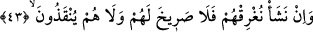
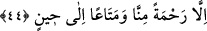

Şeyh Zerrûkî (k.s.)’un Hizbü’l-bahr şerhinde böyle geçmektedir.
43. Dilesek onları suda boğarız. O zaman ne onların imdadına koşan olur, ne de
onlar kurtarılırlar.
“Dilesek onları suda boğarız.” Bu âyet önceki âyetlerin devamı ve tamamlayıcısıdır.
Çünkü onlar bu âyetin muhtevâsını îtiraf etmektedirler. Nitekim Allah Teâlâ’nın
“Dağlar gibi dalgalar onları kuşattığı zaman, dini tamamen Allah’a has kılarak
(ihlâsla) O’na yalvarırlar.” (Lokman, 31/32) kavli bunu ifâde etmektedir.
Boğma işini yalnız Allah Teâlâ’nın meşîet ve irâdesine bağlamak onların günahları
sebebiyle helâkini gerektiren sebep ve şartların mevcud ve tamam olduğunu, bu işin
artık Allah Teâlâ’nın dilemesine kaldığını bildirmektedir.
Bahru’l-ulûm’da der ki: “Bu âyet, farz ve takdîre hamledilmiştir. Bunun delili ise
Allah Teâlâ’nın “...ne de onlar kurtarılırlar. Ancak bizim tarafımızdan bir rahmet ve
belli bir zamana kadar dünyadan faydalandırmamız müstesnâdır” (Yâsîn, 36/43-44)
kavlidir.”
Mânâ şöyledir: Biz onları, yâni (41. Âyette zikredilen) onların zürriyyetlerini
denizdeki gemilerde yükleyip taşımakla beraber kendilerini boğmayı dilesek denizde
boğarız, batırırız ve suda helâk ederiz. “
” kelimesi denizde suda batmak/çökmek
demektir.
“O zaman ne onların imdâdına koşan olur, ne de” bu iş olduktan sonra “onlar
kurtarılırlar.”
“
” yardım eden, imdâda koşan demek olduğu gibi yardım isteyenin sesidir. Mânâ
ise şöyledir: Onlara yardım eden/imdâdlarına yetişip boğulmaktan koruyan ve boğulma
gerçekleşmeden onu kendilerinden bertaraf edecek kimse yoktur.
44. Ancak bizim tarafımızdan bir rahmet ve belli bir zamana kadar dünyadan
faydalandırmamız müstesnâdır.
Yani bizim tarafımızdan neş’et eden, imdâda yetişmeye, kurtarmaya ve bunlara bağlı
olarak ecellerinin takdir edildiği zamana kadar hayat bahşetmeye sevkeden büyük bir
rahmet dışında hiçbir şey sebebiyle onların imdâdına koşulmaz ve kurtarılmazlar.
Âyette tabiatçıların geminin tabiat gereği yükleri taşıdığı ve içi boş olan şeyin suda
batmadığı şeklindeki iddiâsına red vardır. Allah Teâlâ bu görüşü reddederek şöyle